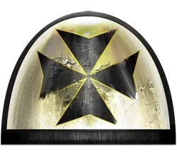
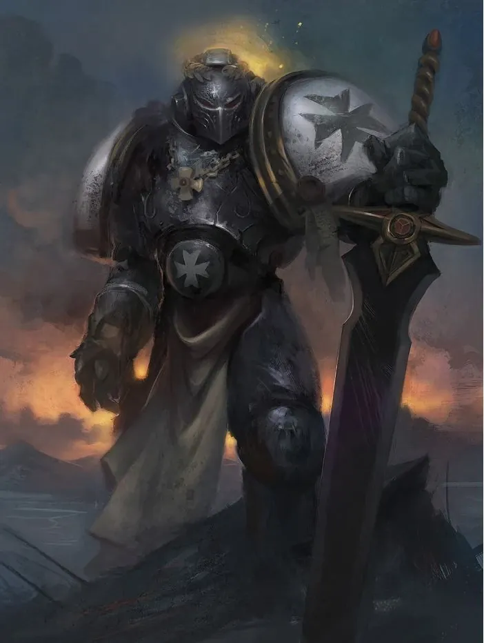
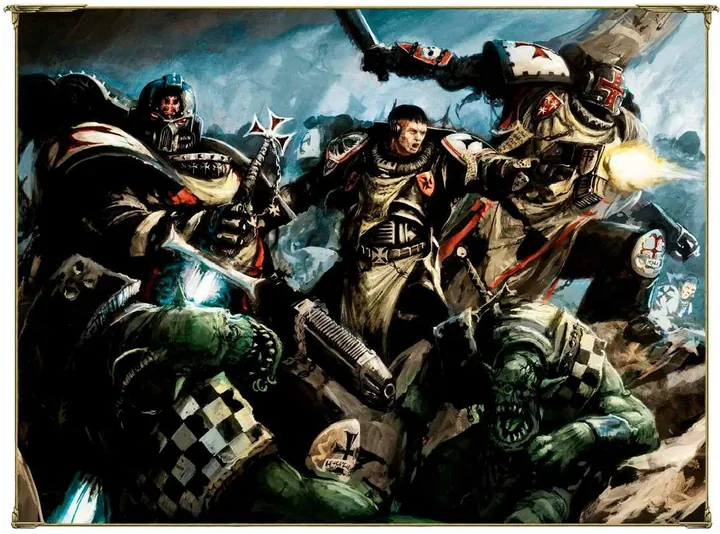
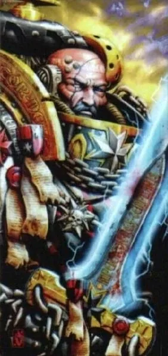
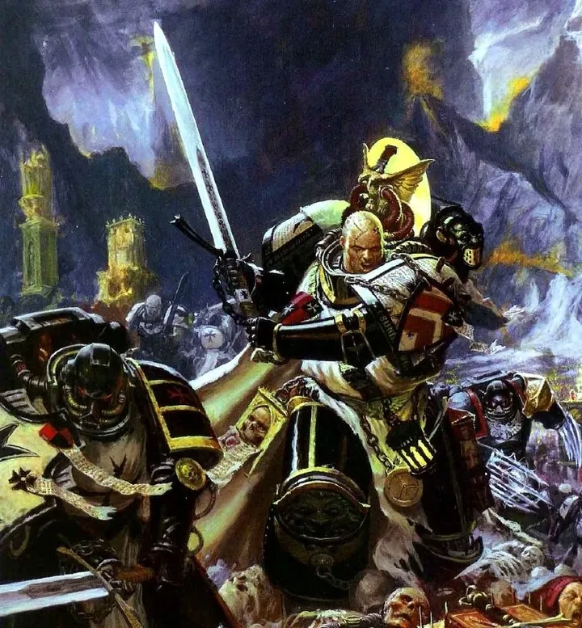
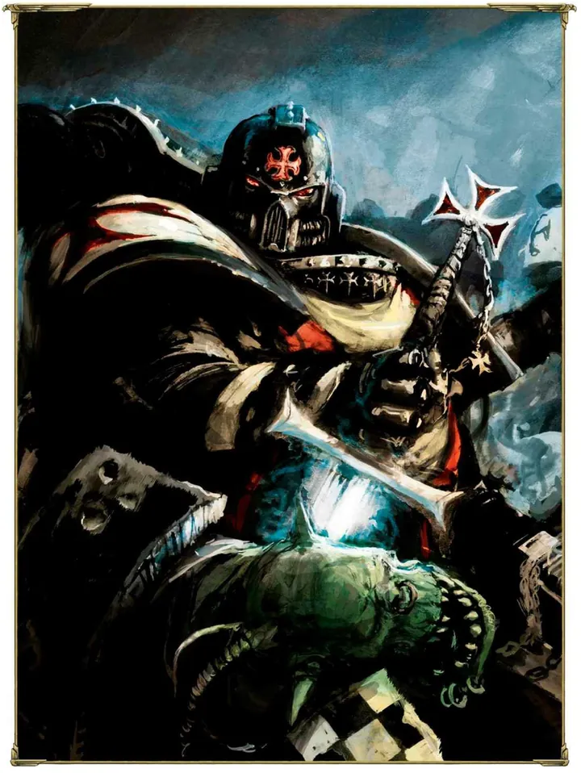

01ภาพรวม
อัศวินครูเสดผู้คลั่งศรัทธา ที่ออกทำสงครามศักดิ์สิทธิ์ไม่หยุดมาหมื่นปี
02ต้นกำเนิด
ก่อตั้งใน Second Founding จาก Imperial Fists นำโดย Sigismund อัศวินผู้ภักดีที่สุดของ Rogal Dorn พวกเขาไม่มีดาวบ้านเกิด แต่ออกเดินทางเป็นกองเรือครูเสดตลอดเวลา
03เนื้อเรื่องเจาะลึก
กำเนิดจาก Siege of Terra
Sigismund เป็นนักดาบที่เก่งที่สุดของ Imperial Fists และเป็น Emperor's Champion ในยุค Heresy หลังสงคราม เขาปฏิเสธ Codex Astartes และตั้ง Black Templars เพื่อพิสูจน์ความภักดีด้วยครูเสดไม่มีสิ้นสุด (ดูหน้า Codex Astartes ข้อ 1 และ 38)
Armageddon Crusade
ในสงคราม Armageddon ครั้งที่ 3 Helbrecht นำกองครูเสดขนาดใหญ่ที่สุดในรอบหลายศตวรรษ Grimaldus ป้องกัน Helsreach จนเหลือทหารเพียงไม่กี่นาย — วีรกรรมที่ถูกเล่าในนิยาย Helsreach
ยุค Primaris
แม้จะเกลียดสิ่งใหม่ แต่ Black Templars รับ Primaris Marines หลัง Emperor's Champion ได้นิมิตยืนยัน และส่งกองครูเสดหลายกองออกปกป้องดาวศักดิ์สิทธิ์ (Shrine Worlds) ของศาสนจักรในยุค Era Indomitus
04นิสัยและวัฒนธรรม
- บูชาจักรพรรดิเป็นพระเจ้าอย่างเคร่งครัด — สิ่งที่ Space Marines ส่วนใหญ่ไม่ทำ
- เกลียดเวทมนตร์ จึงไม่มีนักพลังจิต (Librarian) เลย
- แบ่งเป็นกองครูเสดหลายกอง ทหารมีจำนวนมากกว่า Chapter ปกติ (เชื่อกันว่าหลายพันนาย)
- ทหารใหม่ (Neophyte) เรียนรู้จากพี่เลี้ยงในสนามรบโดยตรง
05จุดที่น่าสนใจ
- Emperor's Champion: ผู้ที่ได้รับนิมิตให้เป็นแชมป์ของจักรพรรดิก่อนศึกสำคัญ
- เป็น Chapter ที่รบกับ Orks บน Armageddon ครั้งที่ 3 อย่างโดดเด่น
06ความสามารถพิเศษ
สิ่งที่ทำให้ Black Templars แตกต่างจากทัพอื่น — ทั้งพลังที่ติดตัวมาทั้งเผ่า/ทัพ และความสามารถของบุคคลสำคัญ
ของทั้งเผ่า/ทัพ

ศรัทธาคืออาวุธ
Black Templars เป็นหนึ่งในไม่กี่ Chapter ที่บูชาจักรพรรดิเป็น "พระเจ้า" จริง ๆ แบบศาสนาของมนุษย์ ความศรัทธาทำให้พวกเขาไม่ถอยและบุกเข้าหาศัตรูอย่างบ้าคลั่ง
เกลียดแม่มดและพลังจิต
ไม่มี Librarian เลย เพราะถือว่าผู้ใช้พลังจิตคือ "แม่มด" แต่อาศัยศรัทธาและ Chaplain แทน คำสาบานของ Chapter รวมถึง "จงเกลียดชังแม่มด" และ "ห้ามปล่อยสิ่งโสโครกให้มีชีวิต"

Emperor's Champion
ก่อนสงครามใหญ่ Chaplain จะได้รับนิมิตเลือกนักรบหนึ่งคนเป็น Emperor's Champion สวม Armour of Faith และถือ Black Sword ทำหน้าที่ท้าดวลและฆ่าผู้นำศัตรู เชื่อกันว่าได้รับพรจากจักรพรรดิโดยตรง

ครูเสดไม่มีวันจบ
ไม่มีดาวบ้านเกิด อาศัยบนกองเรือครูเสดที่เดินทางไม่หยุดมาหมื่นปี และรับทหารใหม่จากดาวที่ผ่านไป — ทำให้มีทหารมากกว่า 1,000 นาย (ลือกันว่าราว 6,000)
ของบุคคลสำคัญ

Helbrecht
High Marshalผู้นำสูงสุดคนปัจจุบัน ถือ Sword of the High Marshals ที่หลอมจากชิ้นส่วนดาบของ High Marshal ทุกคนก่อนหน้า นำครูเสดยิ่งใหญ่ในสงคราม Armageddon

Merek Grimaldus
Hero of HelsreachReclusiarch ผู้นำการป้องกันเมือง Helsreach บน Armageddon ท่ามกลางทัพ Ork นับไม่ถ้วน มีข้ารับใช้ถือโบราณวัตถุศักดิ์สิทธิ์ตามหลัง

Sigismund
Emperor's Champion คนแรกอดีต First Captain ของ Imperial Fists ผู้ก่อตั้ง Chapter และตายในการดวลกับ Abaddon ในปี 781.M31
07หน่วยและบทบาทในกองทัพ
Black Templars ไม่มีดาวบ้านเกิดและไม่ทำตาม Codex เต็มรูปแบบ — แบ่งเป็นกองทัพครูเสด (Crusade) หลายกองที่เดินทางรบทั่วกาแล็กซี และมีทหารมากเกิน 1,000 นาย
High Marshal
ไฮมาร์แชลผู้นำสูงสุดของ Black Templars (ปัจจุบันคือ Helbrecht) ทำหน้าที่แทน Chapter Master

Marshal
มาร์แชลผู้นำกองทัพครูเสดหนึ่งกอง (Crusade) มีอำนาจเต็มในการรบ

Castellan
แคสเทลลันผู้บังคับบัญชาระดับรองลงมา นำกองกำลังย่อยภายในครูเสด
Emperor's Champion
แชมเปียนของจักรพรรดินักรบที่ Chaplain ถูกเลือกผ่านนิมิตก่อนสงครามใหญ่ สวมเกราะ Armour of Faith และถือดาบ Black Sword ท้าดวลผู้นำศัตรู

Sword Brethren
สวอร์ดเบรเธรนทหารผ่านศึกชั้นสูงสุดของ Black Templars ทำหน้าที่เป็นองครักษ์ของ Marshal
Crusader Squad + Neophytes
หน่วยครูเสดเดอร์และนีโอไฟต์Black Templars ไม่มีกองร้อยสเกาต์ — ฝึกเด็กใหม่ (Neophyte) ด้วยการให้รบเคียงข้างพี่เลี้ยง (Initiate) ในหน่วยเดียวกัน
Chaplain / Reclusiarch
แชปเลน / เรคลูเซียร์กChaplain มีอิทธิพลสูงมากใน Chapter ที่คลั่งศาสนานี้ Reclusiarch เป็นผู้นำ Chaplain เช่น Grimaldus ผู้ป้องกัน Armageddon
ตำแหน่งมาตรฐานของ Space Marine (Captain, Apothecary, Techmarine ฯลฯ) ดูได้ที่ หน่วยและบทบาทของ Space Marines และกฎการจัดองค์กรที่ Codex Astartes
08วีรกรรมและเหตุการณ์สำคัญ
ก่อตั้งโดย Sigismund
แชมป์แห่ง Imperial Fists ออกครูเสดล้างแค้นผู้ทรยศ
สงคราม Armageddon ครั้งที่ 3
ฮีโร่ Grimaldus ยืนหยัดปกป้องเมือง Helsreach
ครูเสดปกป้อง Shrine World
ส่งกองครูเสด 4 กองปกป้องดาวศักดิ์สิทธิ์จาก Chaos
09ตัวละครสำคัญ
High Marshal Helbrecht
ผู้นำ Chapterผ่าน Rubicon Primaris และนำครูเสดใหญ่ในยุค Era Indomitus
10ยุค 40K — สหัสวรรษที่ 41
ยุค 40K Black Templars เป็นกองทัพครูเสดที่เคลื่อนที่ไม่หยุด เข้าร่วมสงครามศักดิ์สิทธิ์ทุกที่ที่ศาสนจักรเรียก
11เนื้อเรื่องล่าสุด (Era Indomitus / M42)
ได้รับ Primaris Marines จากกิลลิมัน ออกครูเสดปกป้อง Shrine World และร่วมป้องกันระบบดาว Talledus จาก Word Bearers
หลังการเกิด Great Rift ปฏิทินของจักรวรรดิคลาดเคลื่อน เหตุการณ์ยุคปัจจุบันจึงมักระบุเพียง 'M42' ไม่มีปีที่แน่นอน
12แกลเลอรี